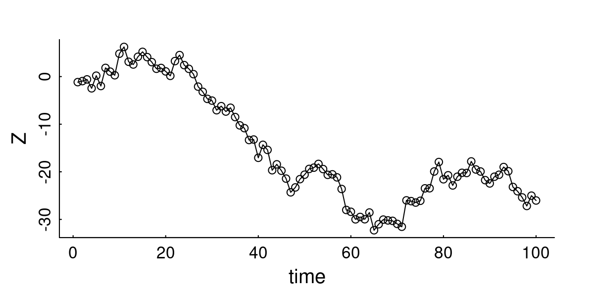

12 Discrete time movement models
Note: this chapter draft is basically the content of a slide presentation, and therefore most sentences incomplete
12.1 1D Random Walk
\[X \sim \text{RW}_{1d}(\sigma)\]
\[X_t = X_{t+1} + \sigma W_t\] where \(W_t \sim {\cal N}(0,1)\) = white noise

12.1.1 Properties
\[\text{E}(Z_t) = 0\] \[\text{Var}(Z_t) = \sigma^2 t\] On average goes nowhere, over time goes to \(\infty\) (unconstrained)
12.2 2D Random Walk
\[{\bf Z} \sim \text{RW}_{2d}(\sigma)\] \[{\bf Z}_t = {\bf Z}_{t-1} + \sigma{\bf W}_t\]
boldfacing means 2-d vector, but will drop going forward.
12.2.1 Properties
\[\text{E}({\bf Z}_t) = \{0,0\};\,\, \text{Var}(|{\bf Z}_t|) = 2 \sigma^2 t\] Step & turning angles:
\[\theta \sim \text{Unif}(-\pi, \pi)\]
\[{|\bf S| / \sigma} \sim \text{Chi}(k = 2); \,\, \text{E}({|\bf S|}) = \sqrt{2}\sigma\]
You can use this result to estimate \(\sigma\) - just take the mean step lengths and divide by \(\sqrt{2}\)

12.3 1D Auto-regression process
\[X \sim \text{AR}_{1d}(\phi, \sigma)\]
\[X_t = \phi X_{t+1} +\sigma W_t\]
By the way: start making functions!
12.3.1 Properties
\[\text{E}(X_t) = 0\] \[\text{Var}(X_t) = {\sigma^2 \over 1-\phi^2} \] (Auto)-regresses to mean (easily rescaled to \(\mu \neq 0\)).
Spatially constrained!
12.4 2D autoregressive walk
\[{\bf Z} \sim \text{AR}_{2d}(\phi, \sigma)\] \[{\bf Z}_t = \phi {\bf Z}_{t-1} + \sigma {\bf W}_t\]
Where everything is 2D. And easily scaled to a different mean \(\bf m\)
scantrack(AR2D(100, 0.8, 1, 10+1i*5), cex = 1)12.4.1 Properties
Spatially constrained in 2D!
Actually looks kind of like home ranging. In fact, the 95% home-ranging area is:
\[A \approx {6 \pi \sigma^2 \over 1 - \phi^2 }\] (Where \(6 \approx -2\log(\alpha)\), \(\alpha = 5\%\))
Rewrite in terms of “steps” (displacements):
\[{\bf Z}_t = {\bf Z}_{t-1} - (1-\phi){\bf Z}_{t-1} + \sigma {\bf W}_t\] \[{\bf S}_t = - (1-\phi){\bf Z}_{t-1} + \sigma {\bf W}_t\]
This means that the step process itself is NOT stationary / independent, but depends on absolute location.
Specifically, the urge to “go home” is proportional to the distance from home.
And, of course, there is auto-correlation in the locations:
But NOT in the steps themselves:
12.5 Correlated Random Walk
Basically:
\[Z_t = Z_{t-1} + S_t\]
- \(\theta = \text{Arg}(S) \sim \text{some distribution}\)
- \(|S| \sim \text{some distribution}\)
The famous one:
]

The totally forgotten one:

pars()
scantrack(CRW())Also - flies off to infinity.
Also - autocorrelated in position:
but not in steps!

(So is it really a correlated random walk?) ]
12.6 Multi-state Correlated Random Walk
Pretty self-explanatory!
BUT … what is the model of transitioning between these states?

12.7 Digression on Markov Chains
(This should really be its own chapter!)
Consider \({\bf X} = \{X_1,X_2,X_3, ... , X_n\}\) is in some discrete state space \(\mathcal{E}\) (here: \(A, B, C\)) with fixed probabilities of transitioning from one state to another:
Sample sequence: \({\bf X} = CCCBBCACCBABCBA ...\).
This is called a Markov chain.

12.7.1 Markov property
\({\bf X}_n\) has the Markov Property if: \[\Pr [X_n=x_n|x_1,x_2,x_3 ... x_{n-1}] = \Pr[ X_n = x_n| x_{n-1}]\] In other words, any system whose future depends .darkgreen[only on the present] and .darkred[not on the past] has the Markov Property and any sequence of events with the Markov property is a Markov Chain.
The \(p_{ij}(t)\)’s of a Markov chain are transition probabilities.
If \(p_{ij}(t)\)’s are time invariant, i.e. \(p_{ij}(t) = p_{ij}\), the chain is called time homogeneous or stationary.
12.7.2 Probability transition matrix
We express this process in terms of a Probability Transition matrix:

Such that: \[M_{ij}=\Pr{(X_{t+1} = j | X_t = i)} = p_{ij}\] Note that: \[\sum_{j=1}^{n} p_{ij} = 1 \ldots \text{BUT} \ldots \sum_{i=1}^{n} p_{ij} \neq 1\]
Such that: \[\Pr{(X_{t+1} = j)} = \sum_{i=1}^N M_{ij} \Pr{(X_t = i)}\] Which can be conveniently rewritten in matrix notation as: \[\pi_{t+1} = {\bf M} \times (\pi_{t})^T\]
Where \(\pi_t\) is the distribution of the system over all states at time \(t\).
12.7.3 Example 1: Children play frisbee
\[\large{\bf M}= \begin{array}{c|cccc|} & A & B & C & D\\ \hline A & 0 &3/4& 0 & 1/4\\ B &0 & 0 & 1/4 & 3/4\\ C &1/3 & 1/3 & 0 & 1/3\\ D &0 & 0& 1 & 0 \end{array}\]
Let’s give the frisbee to Alice, and see what happens:
M <- rbind(c(0,3/4,0,1/4), c(0,0,1/4,3/4), c(1/3,1/3,0,1/3), c(0,0,1,0))
rownames(M) <- c("Alice", "Boris", "Cheng", "Ditya")
colnames(M) <- rownames(M)
rowSums(M)Alice Boris Cheng Ditya
1 1 1 1 State<-1:4
X <- 1
Xs <- X
for(i in 1:30){
X<-sample(State,1,prob=M[X,])
Xs <- c(Xs, X)
}
paste(LETTERS[Xs], collapse="-")[1] "A-B-D-C-B-D-C-D-C-A-B-D-C-A-B-D-C-A-B-D-C-B-C-B-D-C-A-B-C-A-D"This is called a realization of a stochastic process.
Let us consider this process probabilistically. Again, we start with Alice (click below to animate - pay attention to the probabilities )
[1] "pi_ 20 = 0.12,0.211,0.361,0.308"The state: \(\pi^* = (0.12 , 0.21 , 0.361 , 0.308)\) is referred to as stationary.
- The name can be a bit confusing: the frisbee is not stationary, it is always moving around.
- All states have a finite probablity (0 to 1) of being revisited forever and ever until the children’s arms fall off. Such states are termed recurrent, persistent or ergodic.
- The state can be solved for mathematically: \[\pi^* = {\bf M} \times (\pi^*)^T\]
This is often quite easy to obtain.
For example, via brute force matrix multiplication:
powermat=function(M,t){
Mt <- M
for(i in 2:t) Mt = Mt %*% M
Mt}
powermat(M,100) [,1] [,2] [,3] [,4]
PA 0.1203008 0.2105263 0.3609023 0.3082707
PB 0.1203008 0.2105263 0.3609023 0.3082707
PC 0.1203008 0.2105263 0.3609023 0.3082707
PD 0.1203008 0.2105263 0.3609023 0.3082707Or via matrix algebra:
PA PB PC PD
0.1203008 0.2105263 0.3609023 0.3082707 Think about why does this works …
12.8 Back to Multi-state CRW …
To simulate a multi-state CRW, first create a transition matrix:
M <- rbind(c(0.7,0.2,.1), c(.4,.4,.2), c(0.3,0.6,0.1))
row.names(M) <- colnames(M) <- c("chilling", "cruising", "huffing")
M chilling cruising huffing
chilling 0.7 0.2 0.1
cruising 0.4 0.4 0.2
huffing 0.3 0.6 0.1Create a vector of simulated states:
n <- 400
states <- 1:nrow(M)
State <- c(1, rep(NA, n=1))
for(i in 2:n)
State[i] <- sample(states, 1, prob=M[State[i-1],])
State[1:100] [1] 1 1 1 1 3 2 2 3 1 1 1 1 1 1 1 1 1 1 1 1 1 3 2 1 1 2 3 2 1 1 1 2 3 2 1 1 3
[38] 2 1 1 3 1 2 3 2 1 1 1 1 1 1 1 1 1 1 1 1 1 1 1 1 2 3 2 1 1 1 3 2 1 1 1 1 1
[75] 1 1 2 1 1 1 1 3 2 1 1 2 1 1 2 1 1 1 1 2 2 1 1 2 3 2Next, assign movement steps to each state